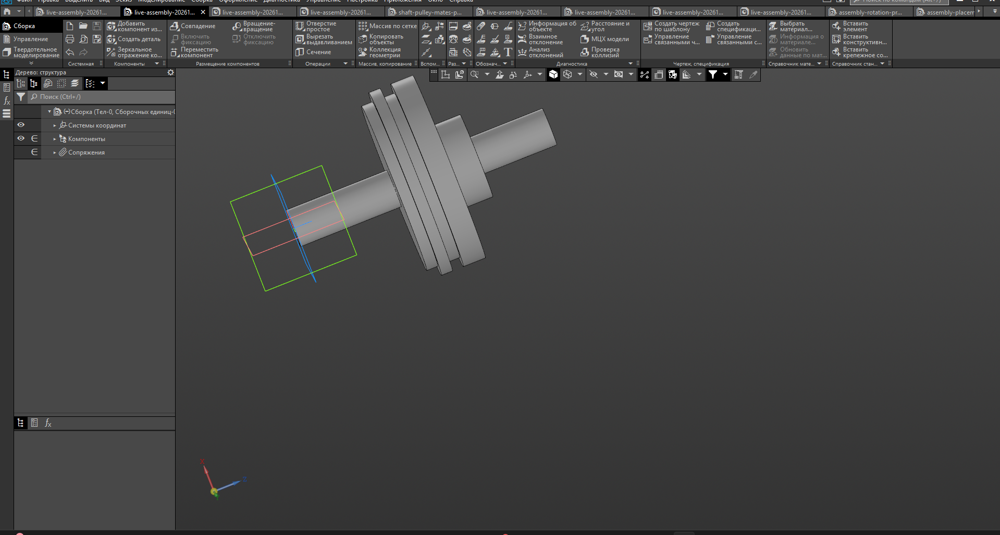
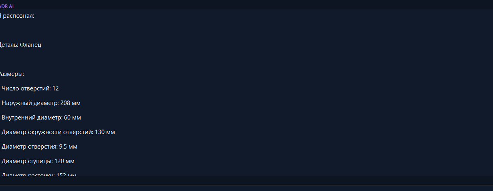

Text-to-CAD
Russian engineering commands become typed plans; ambiguity becomes a targeted question.
“Create a Ø30 × 100 shaft…”→Feature Plan
From an engineering instruction to a reviewable Feature Plan, parametric model, assembly, and drawing — locally, with traceable dimensions.
KADR connects language, engineering evidence, and native KOMPAS documents. Every capability carries an explicit status.
Russian engineering commands become typed plans; ambiguity becomes a targeted question.
Parts, operations, revisions, and geometry checks through the native COM API.
Components, coordinates, and baseline mates. Discrete positions are verified on a reference mechanism.
OCR, views, sections, provenance, and safe blocking when information is incomplete.
Associates dimensions with regions, views, and CAD topology without promoting guesses to facts.
Native drawing creation from the current model with named views and metadata.
Typed constraints and analytical positions. Native dynamic motion is the next gate.
Local inference without sending engineering data to an external AI API.
Not fictional product renders: these are actual KADR and KOMPAS development captures.

Shaft and pulley: a real KOMPAS-3D assembly API verification result.

A controlled case for dimension reading and ambiguity blocking.
automated tests
The portable bundle remains local. KOMPAS-3D and its license are installed separately.
# Verify the portable bundle
.\START_KADR.cmd --check-only
# Start KADR
.\START_KADR.cmd
# Run source tests
.\.venv313\Scripts\python.exe -m unittest \
discover -s tests -p "test_*.py" -vEach phase earns its status through automated and live verification.
174 tests, M3D/CDW/A3D, crank-slider.
Dynamic mates and reproducible A3D motion.
Collisions, minimum clearance, and reports.
Stable evidence-to-BREP topology mapping.
Multi-view drawing reconstruction.
Reviewable ESKD production document sets.
Complex nested assembly and BOM.
✓ Local engineering data processing
✓ Parametric KOMPAS documents
○ Proprietary commercial core
○ Early access — in preparation